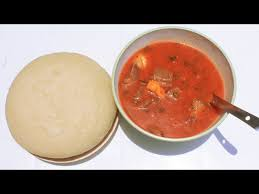

ubugari recipe

how to make Ubugari
ubugari is an eastern/wester African stable dish that is made from grounded cassava
that is then mixed with water to have strong consistency usually eaten with
a stew .
Ingredients
steps to make ubugari
- bring a pot full water to a boil
- when the water has boiled reduce it and leave just about
half of the pot
- add four cups of cassava flour and
let it sit on top of the water for a minute
- mix the cassava with the water with a wooden spatula until u reach
a hard consistency
- keep mixing until all the flour no more flour is visible if needed
add water and keep mixing
- close the pot and keep it a lowest heat for about
a minute and half
- turn off the stove and remove the pot now you have delicious
pot of ubugari
- pair it with a stew of your choice and enjoy
Home